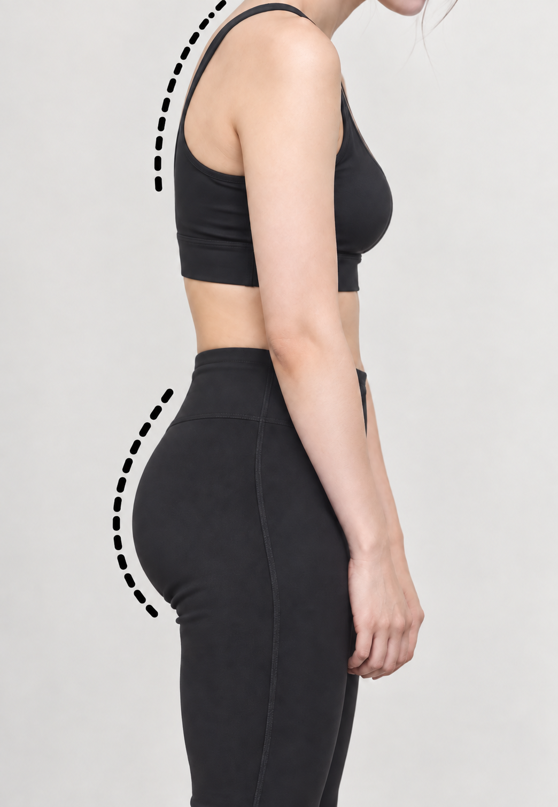

マシンピラティスで
動きをサポート

Begin with a little time for you.
猫背、巻き肩、垂れヒップ…
悩んでいませんか？
その悩みに、ピラティスという選択を。
姿勢から、呼吸から、自分を整えて。
自分らしく軽やかな毎日へ。
女性専用・マシンピラティス 溜池山王駅 徒歩1分
整える。
巡る。
わたしらしく、
美しく。MayroPILATES STUDIO
ABOUT PILATES
ピラティスって何？
ピラティスは、ただ鍛えるだけではなく、
姿勢・呼吸・骨盤・体幹を整えながら、
しなやかに動ける身体へ導くメソッドです。

01姿勢を整える
背骨を本来の位置へ導き、
美しい立ち姿へ。
02骨盤を安定させる
身体の土台を整え、
ヒップラインや下半身を支える。
03インナーマッスルを使う
表面だけではなく、
内側からしなやかに支える。
04呼吸を深める
深くなめらかな呼吸を整え、
心と身体をリラックス。
Mayroが選ばれる理由
心も身体も整う、Mayroならではの5つのポイント
女性のための
スタジオ
一人ひとりに合わせた
オーダーメイドレッスン
落ち着いた
心地よい空間
通いやすい
駅徒歩1分の立地
 A peaceful time
A peaceful timefor a better you.
料金プラン
Menu / Priceあなたのペースに合わせた通い方を。
月1回コース
月額¥10,000
税込
月2回コース
月額¥18,000
税込
月4回コース
月額¥32,000
税込
都度払い
1回¥11,000
税込
料金はすべて税込です。ご入会・プランについては、体験後のカウンセリングでご案内します。
無料体験の流れ
First Trialはじめての方でも安心。
かんたんな4ステップで、気軽にご体験いただけます。
 01
01ご予約
Webから簡単に
ご予約いただけます。 02
02カウンセリング
お悩みや目標を
丁寧にヒアリング。 03
03体験レッスン
インストラクターが
やさしくサポート。 04
04アフターカウンセリング
今後の通い方やプランを
ご案内します。

YOUR FIRST STEP